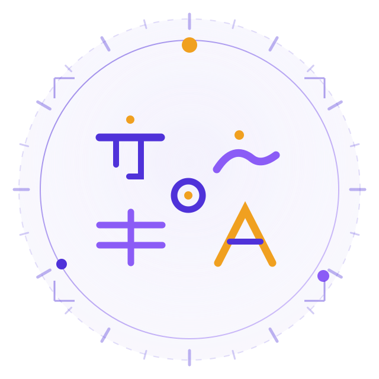

Worldwide · free · on your deviceChoose your language journey
One complete learning space for courses, country contexts, lessons, deep practice, review history and level tests. Every course below is free, runs in your browser and keeps its progress on your own device. Every course runs the same ladder — A1 to C5 in order — and publishes its six CEFR levels today. Not sure which language? Browse courses by country — 194 countries, each with the languages we can teach for it.
38 languages6 CEFR levels each1368 lessons2280 test items194 country contexts
How a course is built
Six published levels — A1, A2, B1, B2, C1, C2 — six lessons per level, and a level test after each one.
Start with the script
A1 opens with the alphabet and counting — each letter with its sound, its romanisation and stroke order to copy.
Say it from lesson one
Vocabulary and dialogue carry a romanisation on every line, so a total beginner can speak before they can read.
Then prove it
Practice of several types per lesson, a worksheet, and a level test before the next level opens.
Collection I — first release
Collection II — second release
Collection III — worldwide release
The A1 → C5 ladder
Every course runs the same eleven levels, in this exact order. The six CEFR levels carry the full authored content; the five EkGuru Extended Mastery levels are published as their content is authored.
A1 · Beginner
Alphabet, sounds, numbers and core words — the level where you stop being a stranger to the language.
A2 · Elementary
Everyday sentences: family, food, shopping, travel, and the present and past tenses that carry them.
A3 · Independent everyday use
EkGuru Extended Mastery — in development. Independent everyday use: everyday conversation without preparing for it, routine situations end to end.
B1 · Intermediate
Real conversation. Opinions, plans, complaints and stories — with listening practice at natural speed.
B2 · Upper intermediate
Longer texts, subordinate clauses and register. You read a news paragraph and summarise it in your own words.
B3 · Mature fluency
EkGuru Extended Mastery — in development. Mature fluency: speak and write at length with precision, manage debate and wider production.
C1 · Advanced
Nuance: idioms, implied meaning, argument and style. Idiom interpretation and discourse ordering start here.
C2 · Mastery
Mastery work — paraphrase, guided composition and style rewriting, measured against the level test.
C3 · Specialization
EkGuru Extended Mastery — in development. Specialization: legal, medical, technical or literary language at depth.
C4 · Expert depth
EkGuru Extended Mastery — in development. Expert depth: academic and professional writing, research-grade reading, precise argument.
C5 · Teaching and mediation
EkGuru Extended Mastery — in development. Teaching and mediation: teach, translate and explain the language itself.
Pick by purpose, not just by name
Whatever brought you here, there is a route that starts today.
Find my level
Five questions, then a starting point — so you are not re-reading A1 when you already speak.
Take the placementPractice labs
Drills for the parts that need repetition: script, numbers, postpositions, verb endings.
Open the labsWorksheets
Printable sheets and charts to take away from the screen — alphabet charts, grammar tables, word lists.
See materials